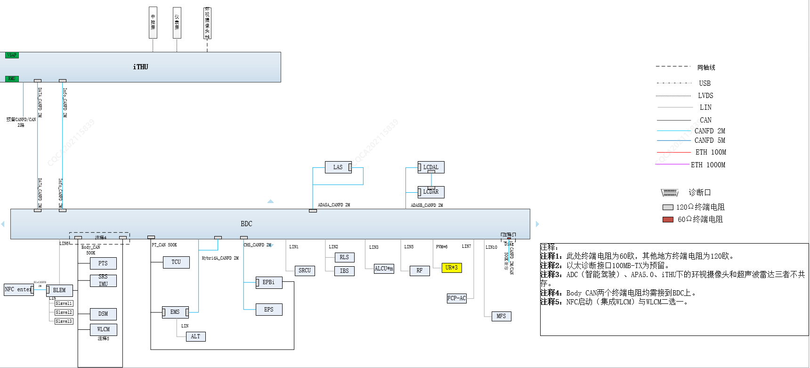
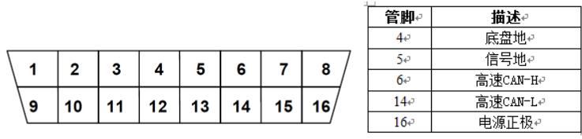

CAN расшифровывается как Controller Area Network, полное название — сеть контроллеров (шина CAN), то есть управляющие устройства соединяются между собой для обмена данными.
Резисторы 120 Ω на концах силовой шины PCAN установлены внутри блока управления двигателем (EMS) и контроллера домена кузова (BDC); резисторы 120 Ω на концах шины шасси CHSCANFD установлены внутри интеллектуального контроллера кузова (BDC) и электронного интегрального стояночного тормоза (EPBi); оба резистора 120 Ω на концах шины кузова BCAN установлены внутри интеллектуального контроллера кузова (BDC); резисторы 120 Ω на концах развлекательной шины INFO CANFD установлены в базовом терминале автомобильной мультимедиа (iTHU) и внутри интеллектуального контроллера кузова (BDC); резисторы 120 Ω на концах шины данных DATACANFD установлены в базовом терминале автомобильной мультимедиа (iTHU) и внутри интеллектуального контроллера кузова (BDC); резисторы 120 Ω на концах шины вождения ADAS A CANFD установлены внутри интеллектуального контроллера кузова (BDC) и системы помощи при движении по полосе (LAS); резисторы 120 Ω на концах шины вождения ADAS B CANFD установлены в системе левого заднего углового радара (LCDAL) и правого заднего углового радара (LCDAR); резисторы 120 Ω на концах шины HybridCAN установлены внутри блока управления двигателем (EMS) и контроллера домена кузова (BDC).
Узлы с диагностическими функциями на силовой шине PCAN включают блок управления двигателем (EMS), блок управления коробкой передач (TCU) и интеллектуальный контроллер кузова (BDC)
Узлы с диагностическими функциями на шине шасси CHS CANFD включают систему электроусилителя рулевого управления (EPS), электронный интегральный стояночный тормоз (EPBi) и интеллектуальный контроллер кузова (BDC)
Узлы с диагностическими функциями на шине кузова BCAN включают интеллектуальный модуль управления кузовом (BDC), модуль водительского сиденья (DSM), контроллер двери задка автомобиля (PTS), контроллер беспроводной зарядки (WLCM), ключ NFC (NFC), модуль задних сидений (RDSM) и модуль контроллера подушек безопасности (SRS).
Узлы с диагностическими функциями на развлекательной шине INFO CANFD включают базовый терминал автомобильной мультимедиа (iTHU) (примечание: интегрирует TBOX, контроллер кругового обзора AVM, IP) и интеллектуальный контроллер кузова (BDC).
Узлы с диагностическими функциями на шине данных DATACANFD включают базовый терминал автомобильной мультимедиа (iTHU) и интеллектуальный контроллер кузова (BDC)
Узлы с диагностическими функциями на шине вождения ADAS A CANFD включают систему помощи при движении по полосе (LAS) и интеллектуальный контроллер кузова (BDC)
Узлы с диагностическими функциями на шине вождения ADAS B CANFD включают систему левого заднего углового радара (LCDAL), систему левого заднего углового радара (LCDAR) и интеллектуальный контроллер кузова (BDC)
Назначение контактов диагностического разъема следующее:
